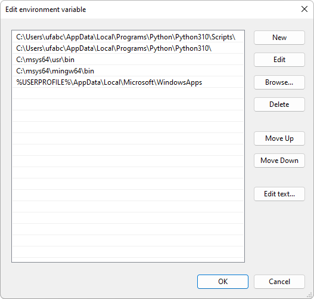

1.3 Windows
Para a instalação das ferramentas e bibliotecas de desenvolvimento no Windows, utilizaremos o MSYS2.
MSYS2 é um ambiente de terminal tipo Unix com acesso a um repositório de ferramentas e bibliotecas de desenvolvimento de aplicações nativas em Windows através do gerenciador de pacotes pacman. Essas ferramentas e bibliotecas incluem o CMake, Git, GLEW, SDL 2.0 e SDL_image 2.0, entre outras que vamos utilizar na disciplina. O MSYS2 também permite instalar o MinGW-W64. Com isso conseguiremos usar o compilador GCC para gerar binários nativos para o Windows 64 bits e poderemos também usar o GDB para depurar nossos programas.
Poderíamos instalar as ferramentas de desenvolvimento sem precisar do MSYS2. O Visual Studio é uma alternativa ao GCC e tem a vantagem de ser um IDE completo. A desvantagem é que a instalação das dependências é mais complexa, intrusiva e suscetível a incompatibilidades decorrentes das diferentes configurações do Windows. Daremos preferência ao MSYS2 pois a instalação é mais simples e a experiência de uso das ferramentas é mais parecida com a das outras plataformas.
Siga os passos a seguir para instalar o MSYS2 e as ferramentas/bibliotecas de desenvolvimento:
Baixe o instalador de https://www.msys2.org, execute-o e siga as instruções de instalação.
Abra o shell do MSYS2 (aplicativo “MSYS2 MSYS” no menu Iniciar) e execute o seguinte comando:
pacman -S git mingw-w64-x86_64-ccache mingw-w64-x86_64-cmake mingw-w64-x86_64-gcc mingw-w64-x86_64-gdb mingw-w64-x86_64-ninja mingw-w64-x86_64-glew mingw-w64-x86_64-SDL2 mingw-w64-x86_64-SDL2_imageIsso instalará as ferramentas Git, Ccache, CMake, Ninja (o Ninja substitui o GNU Make no Windows), GCC e GDB (do MinGW-W64), e as bibliotecas GLEW, SDL 2.0 e SDL_image 2.0.
Opcionalmente, instale o pacote
mingw-w64-x86_64-glslangcom o comando a seguir. Isso instalará a ferramentaglslangValidatorque poderá ser usada como linter de código na linguagem GLSL (linguagem de shader que será utilizada na disciplina):pacman -S mingw-w64-x86_64-glslangAo terminar a instalação, feche o shell do MSYS2.
Baixe o instalador do Python 3 para Windows 64 bits e execute-o. No restante do texto usaremos como exemplo a versão 3.10, mas qualquer versão a partir da 3.6 é suportada.
Durante a instalação, certifique-se de ativar a opção “Add Python 3.10 to PATH”.
Após a instalação, abra o Prompt de Comando (
cmd.exe) e execute o comandowhere pythonpara exibir os diferentes caminhos em que opythoné alcançado pela variável de ambientePath. O resultado deverá ser parecido com o seguinte:C:\>where python C:\Users\ufabc\AppData\Local\Programs\Python\Python310\python.exe C:\Users\ufabc\AppData\Local\Microsoft\WindowsApps\python.exeO primeiro caminho exibido deve ser o caminho do executável do Python que acabou de ser instalado. Neste caso está correto, pois o Python foi instalado no local padrão do instalador que é
%LocalAppData%\Programs\Python\Python310(neste exemplo, o nome do usuário éufabc).No menu inicial, procure por “Editar variáveis de ambiente para a sua conta”. Edite a variável
Pathdo usuário atual e inclua os caminhos paramingw64\bineusr\bindo MSYS2. Por exemplo, se o MSYS2 foi instalado emC:\msys64, inclua os seguintes caminhos noPath1:C:\msys64\usr\bin C:\msys64\mingw64\binEdite a ordem dos caminhos de tal forma que os caminhos do Python sejam listados antes dos caminhos do MSYS2, como mostra a figura a seguir. Essa ordem é importante pois o MSYS2 também instala o Python 3, mas queremos usar o Python do Windows:

Para testar se o MSYS2 foi instalado corretamente, abra o Prompt de Comando e execute o comando
g++ --version. A saída deverá ser parecida com a seguinte:g++ (Rev5, Built by MSYS2 project) 12.1.0 Copyright (C) 2022 Free Software Foundation, Inc. This is free software; see the source for copying conditions. There is NO warranty; not even for MERCHANTABILITY or FITNESS FOR A PARTICULAR PURPOSE.
Verificando o OpenGL
O suporte ao OpenGL vem integrado ao Windows. Apenas certifique-se de instalar os drivers mais recentes da sua placa de vídeo.
Instalando o Emscripten
Abra o Prompt de Comando em algum caminho onde queira instalar a pasta do SDK do Emscripten (por exemplo,
C:\). Note the o terminal deve ser o Prompt de Comando e não o PowerShell.Clone o repositório do SDK:
git clone https://github.com/emscripten-core/emsdk.gitEntre na pasta recém-criada:
cd emsdkBaixe e instale o SDK atualizado (latest):
emsdk install latestAtive o SDK latest para o usuário atual:
emsdk activate latestConfigure as variáveis de ambiente e
PATHdo compilador para o terminal atual:emsdk_env.bat
Para testar se a instalação foi bem-sucedida, execute o comando emcc --version. A saída deverá ser parecida com a seguinte:
emcc (Emscripten gcc/clang-like replacement + linker emulating GNU ld) 3.1.18 (d5ca9bba6513763d5bdddbd0efff759332bd85d7)
Copyright (C) 2014 the Emscripten authors (see AUTHORS.txt)
This is free and open source software under the MIT license.
There is NO warranty; not even for MERCHANTABILITY or FITNESS FOR A PARTICULAR PURPOSE.Refaça o passo 6 sempre que abrir um terminal ou execute o comando a seguir para registrar permanentemente as variáveis de ambiente no registro do sistema:
emsdk_env.bat --permanentCaso não queira modificar o registro do sistema, crie um atalho para cmd.exe e use a opção /k para executar o arquivo emsdk_env.bat sempre que o Prompt de Comando for aberto. Por exemplo:
cmd.exe /k "C:\emsdk\emsdk_env.bat"Mude esse caminho de acordo com o local onde emsdk_env.bat foi instalado.
A variável
Pathexiste tanto nas variáveis do usuário quanto nas variáveis do sistema. A modificação doPathdo usuário geralmente é suficiente para uma instalação correta. Se ocorrer algum erro ao seguir as instruções de construção do “Hello, World!” na seção 1.5 (erro de construção ou de DLL não encontrada), experimente alterar oPathdo sistema ao invés do usuário.↩︎